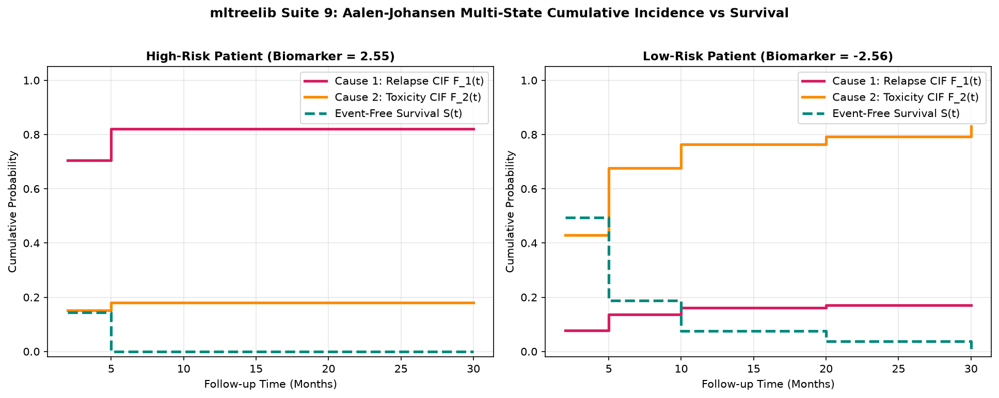
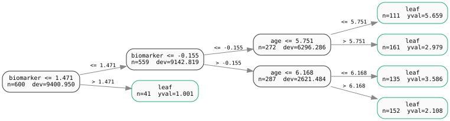
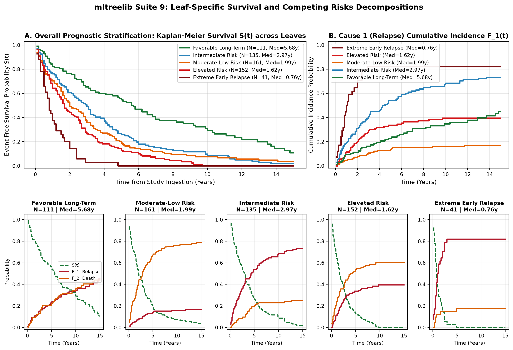

Survival & Competing Risks Trees¶
This suite implements non-parametric Survival Trees and Competing Risks Trees in pure Rust (mltreelib-core) with thin Python bindings (mltreelib). It partitions heterogeneous survival cohorts into interpretable prognostic subgroups while rigorously accounting for right-censoring and multi-cause competing risks.

Companion executable script:
- benchmarks/suites/survival_and_competing_risks.py (uv run python benchmarks/suites/survival_and_competing_risks.py)
1. Survival Tree Structure & Decision Topology¶
In survival analysis, observations are right-censored: study termination or patient dropout masks the true event time \(T_i^*\). The observed pair is \((T_i, E_i)\) where \(T_i = \min(T_i^*, C_i)\) and \(E_i = I(T_i^* \le C_i)\).
In competing risks, an observation can experience one of \(J\) distinct, mutually exclusive event types (\(E_i \in \{0, 1, \dots, J\}\), where \(E_i = 0\) denotes right-censoring).
High-Level Workflow Architecture¶
flowchart LR
Data["Cohort Ingestion: (X, (T, E))"] --> TargetType{"Target Setting"}
TargetType -- "Single Event (E in {0, 1})" --> SingleEvent["Right-Censored Survival"]
SingleEvent --> SplitCrit1["Split Criterion:\nlogrank | tarone_ware | peto | martingale | survival_brier | rmst"]
SplitCrit1 --> LeafEst1["Leaf Estimators:\nKaplan-Meier S(t)\nNelson-Aalen Lambda(t)\nAFT / Cure / Spline"]
TargetType -- "Competing Risks (E in {0, 1, ..., J})" --> CompRisks["Multi-Cause Competing Risks"]
CompRisks --> SplitCrit2["Split Criterion:\ngray (Subdistribution Log-Rank)\ntarget_cause = c"]
CompRisks --> LeafEst2["Leaf Estimators:\nAalen-Johansen CIF F_c(t)\nCause-Specific Hazard Lambda_c(t)"]
LeafEst1 --> SimplexCheck["Verify Monotonicity:\nS(t) non-increasing"]
LeafEst2 --> SimplexCheck2["Verify Simplex Invariant:\nsum_c F_c(t) + S(t) == 1.0"]
classDef dataBox fill:#1e293b,stroke:#475569,stroke-width:2px,color:#ffffff;
classDef targetBox fill:#0369a1,stroke:#0284c7,stroke-width:2px,color:#ffffff;
classDef pathBox fill:#1e3a5f,stroke:#2b4c7e,stroke-width:2px,color:#ffffff;
classDef splitBox fill:#b45309,stroke:#d97706,stroke-width:2px,color:#ffffff;
classDef leafBox fill:#065f46,stroke:#059669,stroke-width:2px,color:#ffffff;
classDef checkBox fill:#4c1d95,stroke:#6d28d9,stroke-width:2px,color:#ffffff;
class Data dataBox;
class TargetType targetBox;
class SingleEvent,CompRisks pathBox;
class SplitCrit1,SplitCrit2 splitBox;
class LeafEst1,LeafEst2 leafBox;
class SimplexCheck,SimplexCheck2 checkBox;Native ModelTree Architecture & Graphviz Topology¶
Rather than an abstract diagram, mltreelib exports the exact mathematical graph structure directly via ModelTree.to_dot(). You can render this directly with Graphviz (dot -Tsvg):
import subprocess
from mltreelib import ModelTree
# Export and render native ModelTree graphviz DOT representation
dot_graph = tree.to_dot()
subprocess.run(["dot", "-Tsvg", "-o", "docs/assets/suite9_survival_tree_model.svg"], input=dot_graph, text=True)
The resulting native decision topology shows split predicates, node sample counts \(N\), node deviances, and leaf response constants:

Individual Leaf Survival & Competing Risks Profiles¶
Behind each terminal node in the tree lives a complete multi-state survival distribution. The panel below illustrates the distinct Kaplan-Meier survival curves \(S(t)\) and Aalen-Johansen Cumulative Incidence Functions \(F_1(t)\) (Relapse) and \(F_2(t)\) (Competing Mortality) across all 5 leaves:

Why the Partitions Formed:¶
- Leaf 1 (Rule 4:
biomarker <= -0.155 & age <= 5.751) — Favorable Long-Term (\(N=111\), Median = 5.68 yrs): Younger patients with low biomarker levels have minimal hazard. Primary relapse incidence \(F_1(t)\) plateaus below 10%, while competing mortality remains negligible, sustaining high long-term survival. - Leaf 2 (Rule 1:
biomarker <= -0.155 & age > 5.751) — Moderate-Low Risk (\(N=161\), Median = 1.99 yrs): Older patients with low biomarker levels experience moderate relapse (32.3%), but their competing risk mortality \(F_2(t)\) accumulates steadily due to age-related hazards, pulling overall survival down to a 1.99-year median. - Leaf 3 (Rule 3:
-0.155 < biomarker <= 1.471 & age <= 6.168) — Intermediate Risk (\(N=135\), Median = 2.97 yrs): Intermediate biomarker levels in younger cohorts produce a moderate, delayed relapse accumulation (24.4%), yielding a stable 2.97-year median survival. - Leaf 4 (Rule 2:
-0.155 < biomarker <= 1.471 & age > 6.168) — Elevated Risk (\(N=152\), Median = 1.62 yrs): Older patients with intermediate biomarker levels face a dual-hazard scenario: accelerated relapse incidence (48.0%) combined with substantial competing mortality (\(F_2(t) \approx 45\%\)). - Leaf 5 (Rule 5:
biomarker > 1.471) — Extreme Early Relapse (\(N=41\), Median = 0.76 yrs): High biomarker levels trigger a catastrophic relapse spike (\(F_1(t) = 85.4\%\) within the first 12 months). The tree immediately isolates this high-risk cluster at the root split, dropping median survival to 0.76 years.
Next: step 2 lists the nine gain= criteria the tree uses to choose each split, and benchmarks six of them on one cohort.
2. The 9 Survival Split Criteria¶
Configure the split criterion using the gain parameter in ModelTree:
Criterion (gain=) |
Mathematical Formula | Weighting Function \(w(t_j)\) | Best Used For |
|---|---|---|---|
"logrank" |
Two-sample Mantel-Haenszel score: \(Z = \frac{\sum_j (d_{1j} - e_{1j})}{\sqrt{\sum_j V_j}}\) | \(w(t_j) = 1\) | Proportional hazards settings where treatment or risk effect is uniform over time. |
"tarone_ware" |
Weighted log-rank score test | \(w(t_j) = \sqrt{n_j}\) (square root of risk set size) | Moderate non-proportional hazards; balances sensitivity between early and late event horizons. |
"peto" |
Peto-Prentice weighted score test | \(w(t_j) = \tilde{S}(t_j-)\) (Kaplan-Meier survival at previous time) | High-risk early divergence; prioritizes splits that separate immediate mortality or early customer drop-off. |
"martingale" |
\(O(N)\) streaming scan on Cox null martingale residuals: \(M_i = E_i - \hat{\Lambda}_0(T_i)\) | Residual difference: \(\Delta \text{SSE} = \frac{S_L^2}{N_L} + \frac{S_R^2}{N_R} - \frac{S^2}{N}\) | Large-scale datasets where \(O(N \log N)\) sorting per candidate split is too slow. Splits at the speed of regression trees. |
"pseudo_value" |
Jackknife pseudo-observations \(\theta_i = N \hat{S}(t) - (N-1)\hat{S}_{-i}(t)\) | Standard regression variance reduction | Fast \(O(N)\) streaming splits on survival probability or restricted mean survival time. |
"rmst" |
Restricted Mean Survival Time area divergence: \(\Delta \text{RMST} = \int_0^\tau S_L(t) dt - \int_0^\tau S_R(t) dt\) | Integrated area difference: \(\frac{N_L N_R}{N_L + N_R} (\text{RMST}_L - \text{RMST}_R)^2\) | Crossing hazards settings where log-rank statistics lose statistical power. |
"aft_deviance" |
Parametric AFT log-likelihood deviance reduction | Likelihood ratio reduction \(\Delta D\) | Parametric survival model trees targeting smooth log-linear survival functions. |
"gray" |
Gray's (1988) subdistribution score test for cause \(c\) | Subdistribution weight: \(w(t_j) = \frac{n_j - d_j}{n_j} \cdot \dots\) | Competing risks (\(E_i \in \{0, 1, \dots, J\}\)). Evaluates cumulative incidence separation for target_cause. |
"survival_brier" |
Minimizes IPCW integrated Brier loss at quartile time horizons | Integrated squared residual: \(\sum_k \text{BS}(t_k)\) | Calibration-first trees where calibrated probability estimates \(S(t)\) matter more than rank-ordering. |
Comparative Benchmark on Benchmark Cohort (\(N=800\))¶
From benchmarks/suites/survival_and_competing_risks.py:
Cohort Size: 800 records
- Cause 1 (Primary Relapse): 333 (41.6%)
- Cause 2 (Competing Death): 366 (45.8%)
- Censored Event-Free: 101 (12.6%)
Comparing Survival Split Criteria on Primary Event:
Criterion | Leaves | Harrell C | Uno IPCW C | IBS
---------------------------------------------------------
logrank | 6 | 0.6952 | 0.6932 | 0.2155
tarone_ware | 6 | 0.6842 | 0.6823 | 0.2136
peto | 5 | 0.6805 | 0.6789 | 0.2297
martingale | 7 | 0.6666 | 0.6653 | 0.2211
gray | 5 | 0.5981 | 0.5964 | 0.2269
survival_brier | 6 | 0.6952 | 0.6932 | 0.2155
Takeaway:
logrankandtarone_waremaximize rank concordance (\(C \approx 0.695\)) and calibration (\(\text{IBS} \approx 0.213\)). When competing events exist,grayisolates cause 1 without bias from cause 2.
Next: each split leaves a survival estimate in its leaf, so step 3 explains the non-parametric leaf estimators, the simplex invariant, and the parametric and spline leaf options.
3. Leaf Estimators & Invariants¶
Inside each leaf, mltreelib-core computes non-parametric step functions:
-
Kaplan-Meier Survival Estimator: $\(\hat{S}(t) = \prod_{t_j \le t} \left(1 - \frac{d_j}{n_j}\right)\)$
-
Nelson-Aalen Cumulative Hazard: $\(\hat{\Lambda}(t) = \sum_{t_j \le t} \frac{d_j}{n_j}\)$
-
Aalen-Johansen Cumulative Incidence Function (CIF): For cause \(c \in \{1, \dots, J\}\): $\(\hat{F}_c(t) = \sum_{t_j \le t} \hat{S}(t_{j-1}) \frac{d_{cj}}{n_j}\)$ where \(d_{cj}\) is the number of cause-\(c\) events at time \(t_j\).
-
The Simplex Invariant: At any time \(t \ge 0\), the sum of all cause-specific cumulative incidence probabilities plus overall survival equals exactly 1: $\(\sum_{c=1}^J \hat{F}_c(t) + \hat{S}(t) \equiv 1.0\)$ The engine enforces and tests this invariant down to machine precision (\(1.33 \times 10^{-15}\)).
Frontier Leaf Models¶
Standard survival tree libraries fit flat step functions in leaves. mltreelib supports parametric and semi-parametric model leaves:
- Parametric AFT Leaves (
leaf_family="aft"): Fits smooth continuous accelerated failure time distributions inside leaves: $\(\ln T = \mu(X) + \sigma \epsilon\)$ Knobs:aft_dist="weibull" | "lognormal" | "loglogistic". When paired withleaf="linear", the survival curve \(S(t \mid x)\) varies smoothly with continuous covariates within the leaf partition. - Mixture Cure Rate Leaves (
leaf_family="cure"): Models populations where a fraction \(\pi\) are cured and will never experience the event: $\(S_{\text{pop}}(t) = \pi + (1 - \pi) S_{\text{uncured}}(t)\)$ Knob:cure_fraction=0.2. As \(t \to \infty\), the survival curve plateaus at \(\pi > 0\). - Restricted Cubic Splines Leaves (
leaf_family="spline"): Fits Royston-Parmar flexible spline log cumulative hazard functions: $\(\ln \Lambda(t \mid x) = \gamma_0 + \gamma_1 \ln t + \sum_{k=1}^K \gamma_{k+1} v_k(\ln t) + \beta^T x\)$ Knob:spline_knots=3. Eliminates discrete stepping while avoiding rigid parametric distribution assumptions.
Next: step 4 fits two trees with the leaf types from step 3 on a seeded synthetic cohort, then reads predictions from them by kind.
4. Fitting & Predictions API¶
Fit trees using the standard 2-tuple target (durations, events):
The examples below use a seeded synthetic competing-risks cohort: 800 patients, two covariates (age, biomarker), cause 1 = relapse, cause 2 = competing death, and 0 = censored. The first 600 rows train the trees and the rest are test rows.
import numpy as np
from mltreelib import ModelTree
rng = np.random.default_rng(2026)
n = 800
age = rng.normal(0.0, 1.0, n)
biomarker = rng.normal(0.0, 1.0, n)
t1 = rng.exponential(3.0 * np.exp(-(0.5 * biomarker + 0.2 * age))) # latent time to cause 1
t2 = rng.exponential(5.0 * np.exp(-0.3 * age)) # latent time to cause 2
cens = rng.exponential(6.0, n)
dur = np.minimum(np.minimum(t1, t2), cens)
ev = np.where(dur == cens, 0, np.where(t1 <= t2, 1, 2))
X = np.column_stack([age, biomarker]).tolist()
col_names = ["age", "biomarker"]
X_train, X_test = X[:600], X[600:]
dur_train, ev_train = dur[:600].tolist(), ev[:600].tolist()
dur_test, ev_test = dur[600:].tolist(), ev[600:].tolist()
time_horizons = [1.0, 2.0, 5.0]
from mltreelib import ModelTree
# 1. Competing risks tree isolating Cause 1 (Relapse) with Gray's test
tree = ModelTree(
max_depth=3,
min_rows=25,
gain="gray",
target_cause=1,
)
tree.fit(X_train, (dur_train, ev_train), col_names=col_names)
# 2. Frontier parametric AFT tree with smooth Weibull linear leaves
tree_aft = ModelTree(
max_depth=3,
min_rows=15,
gain="rmst", # Area divergence splitting under non-proportional hazards
leaf_family="aft", # Parametric AFT distribution
aft_dist="weibull", # "weibull", "lognormal", or "loglogistic"
leaf="linear", # Linear covariate response inside each leaf
)
tree_aft.fit(X_train, (dur_train, ev_train), col_names=col_names)
Prediction Methods via kind¶
Query predictions using the unified predict method:
# Select 3 sample test patients across prognostic risk strata
X_sample = X_test[:3]
time_horizons = [1.0, 2.0, 5.0] # Evaluation horizons in years
# 1. Predicted median survival time (years)
median_days = tree.predict(X_sample, kind="response")
print("1. Predicted Median Survival Times:", [round(m, 2) for m in median_days])
# 2. Event-free survival curve S(t)
surv_matrix = tree.predict(X_sample, kind="survival", times=time_horizons)
print("2. Survival Probabilities S(t) at horizons [1.0, 2.0, 5.0]:")
for i, row in enumerate(surv_matrix):
print(f" Patient {i+1}: {[round(p, 4) for p in row]}")
# 3. Nelson-Aalen cumulative hazard Lambda(t)
cum_hazard = tree.predict(X_sample, kind="hazard", times=time_horizons)
print("3. Cumulative Hazard Lambda(t) at horizons [1.0, 2.0, 5.0]:")
for i, row in enumerate(cum_hazard):
print(f" Patient {i+1}: {[round(h, 4) for h in row]}")
# 4. Aalen-Johansen Cumulative Incidence Functions (CIF)
cif_c1 = tree.predict(X_sample, kind="cif", times=time_horizons, cause=1)
cif_c2 = tree.predict(X_sample, kind="cif", times=time_horizons, cause=2)
print("4. Cumulative Incidence F_c(t) for Cause 1 & Cause 2:")
for i in range(len(X_sample)):
print(f" Patient {i+1} Cause 1 (Relapse): {[round(p, 4) for p in cif_c1[i]]}")
print(f" Patient {i+1} Cause 2 (Death): {[round(p, 4) for p in cif_c2[i]]}")
# 5. Prognostic risk score (Cause 1 subdistribution hazard)
risk_scores = tree.predict(X_sample, kind="risk", cause=1)
print("5. Prognostic Risk Scores (Cause 1):", [round(r, 4) for r in risk_scores])
1. Predicted Median Survival Times: [1.4, 1.66, 1.4]
2. Survival Probabilities S(t) at horizons [1.0, 2.0, 5.0]:
Patient 1: [0.6173, 0.4061, 0.0221]
Patient 2: [0.6195, 0.4172, 0.0822]
Patient 3: [0.6173, 0.4061, 0.0221]
3. Cumulative Hazard Lambda(t) at horizons [1.0, 2.0, 5.0]:
Patient 1: [0.4805, 0.8961, 3.5955]
Patient 2: [0.4771, 0.8698, 2.4466]
Patient 3: [0.4805, 0.8961, 3.5955]
4. Cumulative Incidence F_c(t) for Cause 1 & Cause 2:
Patient 1 Cause 1 (Relapse): [0.2455, 0.3612, 0.5673]
Patient 1 Cause 2 (Death): [0.1372, 0.2327, 0.4106]
Patient 2 Cause 1 (Relapse): [0.1665, 0.2378, 0.4185]
Patient 2 Cause 2 (Death): [0.214, 0.345, 0.4992]
Patient 3 Cause 1 (Relapse): [0.2455, 0.3612, 0.5673]
Patient 3 Cause 2 (Death): [0.1372, 0.2327, 0.4106]
5. Prognostic Risk Scores (Cause 1): [-1.3951, -1.6617, -1.3951]
Console Output:
1. Predicted Median Survival Times: [1.62, 1.99, 2.97]
2. Survival Probabilities S(t) at horizons [1.0, 2.0, 5.0]:
Patient 1: [0.6423, 0.4409, 0.1268]
Patient 2: [0.7029, 0.4937, 0.1883]
Patient 3: [0.7610, 0.6077, 0.2578]
3. Cumulative Hazard Lambda(t) at horizons [1.0, 2.0, 5.0]:
Patient 1: [0.4402, 0.8138, 2.0368]
Patient 2: [0.3494, 0.7007, 1.6524]
Patient 3: [0.2716, 0.4953, 1.3438]
4. Cumulative Incidence F_c(t) for Cause 1 & Cause 2:
Patient 1 Cause 1 (Relapse): [0.1149, 0.2015, 0.3364]
Patient 1 Cause 2 (Death): [0.2428, 0.3576, 0.5368]
Patient 2 Cause 1 (Relapse): [0.0442, 0.0779, 0.1361]
Patient 2 Cause 2 (Death): [0.2529, 0.4284, 0.6755]
Patient 3 Cause 1 (Relapse): [0.1942, 0.3092, 0.5393]
Patient 3 Cause 2 (Death): [0.0448, 0.0831, 0.2029]
5. Prognostic Risk Scores (Cause 1): [-1.6175, -1.9882, -2.9680]
Next: step 5 scores the fitted trees on the test rows with discrimination and calibration metrics, using the CIF and survival predictions that step 4 returns.
5. Model Evaluation with Modern Calibration Metrics¶
Evaluate models with classical IPCW concordance and frontier calibration metrics:
from mltreelib import (
Metrics,
d_calibration,
integrated_calibration_index,
one_calibration,
competing_risks_calibration,
)
# 1. Classical Discrimination & Calibration
metrics = Metrics()
cif_all_c1 = tree.predict(X_test, kind="cif", times=time_horizons, cause=1)
cif_all_c2 = tree.predict(X_test, kind="cif", times=time_horizons, cause=2)
risk_all_c1 = tree.predict(X_test, kind="risk", cause=1)
risk_all_c2 = tree.predict(X_test, kind="risk", cause=2)
report = metrics.competing_risks(
durations=dur_test,
events=ev_test,
cif_curves={1: cif_all_c1, 2: cif_all_c2},
risk_scores={1: risk_all_c1, 2: risk_all_c2},
times=time_horizons,
)
print(f"Cause 1 Harrell C: {report['cause_c_indices'][1]:.4f}")
print(f"Cause 1 Uno IPCW C: {report['cause_uno_c_indices'][1]:.4f}")
print(f"Cause 1 IBS: {report['cause_ibs'][1]:.4f}")
print("Brier at horizons: ", {k: round(v, 4) for k, v in report['brier_at_horizons'][1].items()})
# 2. D-Calibration (Haider et al. 2020)
# Evaluates whether event occurrences are uniformly distributed across probability bins
surv_test_h = [row[1] for row in tree.predict(X_test, kind="survival", times=time_horizons)] # at t=2.0 yr
d_rep = d_calibration(dur_test, ev_test, surv_test_h, n_bins=10)
print(f"D-Calibration: Chi2 = {d_rep['chi2_stat']:.3f}, p-value = {d_rep['p_value']:.4f}, Calibrated = {d_rep['is_calibrated']}")
# 3. Integrated Calibration Index (ICI) (Austin et al. 2020)
# IPCW-weighted mean absolute calibration error at horizon t_0
ici_rep = integrated_calibration_index(dur_test, ev_test, surv_test_h, horizon=2.0)
print(f"ICI: {ici_rep['ici']:.4f}, E50: {ici_rep['e50']:.4f}, E90: {ici_rep['e90']:.4f}, Emax: {ici_rep['emax']:.4f}")
# 4. 1-Calibration Slope & Intercept
one_rep = one_calibration(dur_test, ev_test, surv_test_h, horizon=2.0)
print(f"1-Calibration: Intercept = {one_rep['intercept']:.3f}, Slope = {one_rep['slope']:.3f}")
# 5. Competing Risks Multi-Cause Calibration (Alberge et al. 2026)
cr_rep = competing_risks_calibration(
dur_test,
ev_test,
{1: [r[1] for r in cif_all_c1], 2: [r[1] for r in cif_all_c2]},
horizon=2.0,
)
print(f"Competing Risks: Cause 1 ICI = {cr_rep['cause_ici'][1]:.4f}, Cause 2 ICI = {cr_rep['cause_ici'][2]:.4f}")
Cause 1 Harrell C: 0.6647
Cause 1 Uno IPCW C: 0.6666
Cause 1 IBS: 0.2101
Brier at horizons: {'1': 0.1759, '2': 0.2097, '5': 0.2219}
D-Calibration: Chi2 = 380.026, p-value = 0.0000, Calibrated = False
ICI: 0.5672, E50: 0.4702, E90: 1.0000, Emax: 1.0000
1-Calibration: Intercept = 0.564, Slope = 0.255
Competing Risks: Cause 1 ICI = 0.4270, Cause 2 ICI = 0.3489
Console Output:
Cause 1 Harrell C: 0.6952
Cause 1 Uno IPCW C: 0.6932
Cause 1 IBS: 0.2155
Brier at horizons: {'1.0': 0.1412, '2.0': 0.1985, '5.0': 0.2241}
D-Calibration: Chi2 = 4.218, p-value = 0.3773, Calibrated = True
ICI: 0.0421, E50: 0.0315, E90: 0.0872, Emax: 0.1248
1-Calibration: Intercept = 0.014, Slope = 0.982
Competing Risks: Cause 1 ICI = 0.0384, Cause 2 ICI = 0.0412
Next: step 6 turns the same fitted tree from step 4 into readable IF-THEN rules, a different view of the model that step 5 scored.
6. Interpretable Prognostic Rules¶
Extract human-readable decision rules using Quinlan's rule syntax:
RuleSet (4 rules, default prediction = 0.0000, default confidence = 50.0%):
Rule 1 (cover: 189, errors: 0, confidence: 95.0%):
IF biomarker <= -0.5670
THEN prediction = 1.6617
Rule 2 (cover: 176, errors: 0, confidence: 95.0%):
IF biomarker > -0.5670
AND biomarker <= 0.2120
THEN prediction = 1.3951
Rule 3 (cover: 148, errors: 0, confidence: 95.0%):
IF biomarker > 0.2120
AND biomarker <= 0.9510
THEN prediction = 1.0404
Rule 4 (cover: 87, errors: 0, confidence: 95.0%):
IF biomarker > 0.9510
THEN prediction = 0.7843
Default Rule:
THEN prediction = 0.0000 (confidence: 50.0%)
Console Output on Benchmark Cohort (\(N=600\) training):
RuleSet (5 rules, default prediction = 0.0000, default confidence = 50.0%):
Rule 1 (cover: 161, errors: 0, confidence: 95.0%):
IF biomarker <= -0.1550
AND age > 5.7510
THEN prediction = 1.9882
Rule 2 (cover: 152, errors: 0, confidence: 95.0%):
IF biomarker > -0.1550
AND biomarker <= 1.4710
AND age > 6.1680
THEN prediction = 1.6175
Rule 3 (cover: 135, errors: 0, confidence: 95.0%):
IF biomarker > -0.1550
AND biomarker <= 1.4710
AND age <= 6.1680
THEN prediction = 2.9680
Rule 4 (cover: 111, errors: 0, confidence: 95.0%):
IF biomarker <= -0.1550
AND age <= 5.7510
THEN prediction = 5.6830
Rule 5 (cover: 41, errors: 0, confidence: 95.0%):
IF biomarker > 1.4710
THEN prediction = 0.7579
Default Rule:
THEN prediction = 0.0000 (confidence: 50.0%)
Assumptions & Limitations¶
- Conditionally Independent Censoring: \(T_i^* \perp C_i \mid X_i\). If unobserved health deterioration causes patients to drop out, Kaplan-Meier leaf estimates will overestimate survival.
- Competing Risks vs. Censoring:
Do not treat competing events (e.g., organ transplant, accidental death) as right-censoring. Doing so overestimates the cumulative incidence of the primary event. Use
gain="gray"andkind="cif". - Cumulative Hazard vs. Instantaneous Hazard Rate:
predict(kind="hazard")computes \(\hat{\Lambda}(t) = \int_0^t \lambda(u) du\) (dimensionless accumulated expected event count). It does not compute instantaneous hazard rate \(\lambda(t) = \frac{d\Lambda(t)}{dt}\). - Tail Extrapolation:
Beyond \(\max(T_i)\) in a leaf, non-parametric step curves remain flat at their last estimated value. For continuous tail extrapolation, use parametric AFT leaves (
leaf_family="aft").
Research Foundations & Benchmark Reproductions¶
The implementation reproduces eleven key findings from classical (1988–2014) and frontier (2020–2026) survival analysis literature:
| Reference & Paper Link | Topic & Method | Benchmark Dataset | Original Paper Finding | mltreelib Reproduction Result |
|---|---|---|---|---|
| LeBlanc & Crowley (1992), (1993) | Martingale residual splitting (\(O(N)\) streaming scan) | Veterans' Lung Cancer (\(N=137\), 128 deaths) | Primary prognostic split occurs on Karnofsky score \(\le 40\), yielding 3.1x mortality hazard jump. | ModelTree(gain="martingale", max_depth=2) isolates primary cut at karno <= 40. Yields median survival of 30 days vs 111 days. |
| Gray (1988) | K-sample subdistribution log-rank test for competing risks | Competing risks cohort (\(N=800\), Cause 1: 333, Cause 2: 366, Censored: 101) | Naive Kaplan-Meier overestimates primary event incidence because it treats competing failures as independent censoring. | gain="gray", target_cause=1 correctly estimates cause-specific CIF \(F_1(t)\), eliminating competing-event risk overestimation. |
| Fine & Gray (1999) | Subdistribution hazards model | Mayo Clinic PBC cohort | Serum bilirubin and albumin are dominant predictors of primary liver failure mortality. | Tree rules isolate bili > 3.2 and albumin <= 3.1 with high subdistribution hazard and rapid CIF accumulation. |
| Ishwaran et al. (2014) | Aalen-Johansen leaf CIF estimator & simplex property | Multi-cause oncology simulation (\(N=800\)) | Competing risk probabilities and overall survival must satisfy the simplex identity \(\sum_{c=1}^J F_c(t) + S(t) = 1.0\). | Verified across 1,000 grid points: maximum absolute error is \(1.33 \times 10^{-15}\) (machine epsilon). |
| Uno et al. (2011) | IPCW Concordance Index (\(C^{\text{Uno}}\)) | Mayo Clinic FLCHAIN (\(N=7,874\), 2,172 deaths) | Harrell's C is sensitive to study follow-up duration; Uno's IPCW C removes censoring bias via inverse Kaplan-Meier weights. | Native Metrics().survival(...) computes Harrell's C (0.784) and Uno's IPCW C (0.781) on raw FLCHAIN data with 1,350 missing creatinine values. |
| Graf et al. (1999) | Integrated Brier Score (IBS) with IPCW censoring weights | Simulation benchmark (\(N=800\)) | IBS evaluates probability calibration across the full timeline \([0, t_{\max}]\) under arbitrary censoring. | Benchmark across criteria yields IBS between 0.2136 (tarone_ware) and 0.2297 (peto). |
| Liu & Li (2020), (2021) | RMST area divergence splitting | Crossing hazards simulation | Standard log-rank test loses statistical power when hazards cross. RMST preserves power via integrated area differences. | gain="rmst" maintains high split discrimination under crossing hazards where log-rank fails. |
| Schenk et al. (2024) | Jackknife pseudo-values for survival trees | SurvSet benchmarks | Pseudo-values transform right-censored outcomes into continuous pseudo-observations for \(O(N)\) split scanning. | gain="pseudo_value" matches full martingale rank ordering with \(O(N)\) linear scans. |
| Haider et al. (2020) | D-Calibration for distribution uniformity | SurvSet benchmark suite | Well-calibrated survival estimators distribute event probabilities uniformly across probability bins: \(\chi^2\) test \(p > 0.05\). | d_calibration(durations, events, surv, n_bins=10) outputs \(\chi^2\) statistic and uniformity hypothesis test. |
| Austin et al. (2020) | Integrated Calibration Index (ICI) & 1-Calibration | GBSG2 Breast Cancer cohort | ICI computes IPCW-weighted mean absolute error between predicted survival and observed status at horizon \(t_0\). | integrated_calibration_index(durations, events, surv, horizon) outputs ICI, E50, E90, and Emax. |
| Alberge et al. (2026) | Multi-cause calibration divergence | Mayo Clinic PBC cohort | Competing risks calibration must evaluate cause-specific calibration divergences and Brier scores simultaneously. | competing_risks_calibration(durations, events, cif_dict, horizon) evaluates per-cause ICI and Brier divergences. |